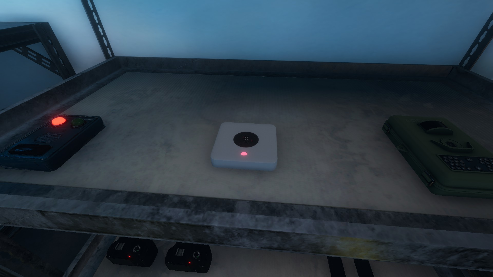
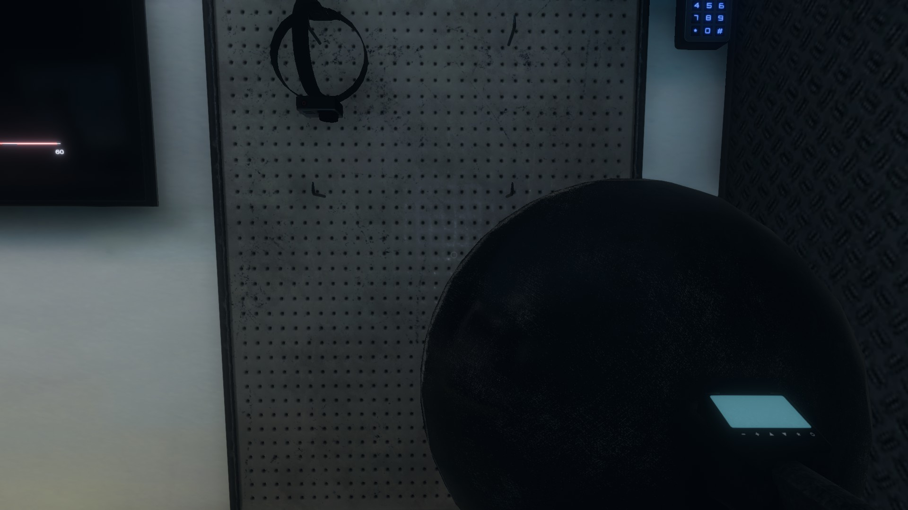

Sound Detection
When it comes to the larger maps, you don't have to much time before your sanity begins to plumet. You can't turn on every light and going room to room is very time consuming. Instead sound becomes your biggest ally. Also there are often secondary objectives that require to gather sound evidence from the ghost. Aside from your own two ears, below are the items you're going to want to invest in for those larger maps
- Sound Sensor 
- At a hefty $80, the sound sensor is the best item for picking up sound. It picks up very quite sounds and displays information on a moniter inside the truck. These sensors cover a large area that is in the shape of a square. Your team can bring a total of four on a mission and placing them throughout the map is key. Then it's a matter of coming back to the truck and keeping an eye out for data spikes. Also be sure that nobody is in those areas as they can also set off the sound sensors with movement and talking.
- Parabolic Microphone 
- The Parabolic Microphone is able to detect sound through walls and over long distances. It works like a mobile sound sensor really and if you're playing by yourself, this item could be pretty useful. The numbers that appear at the top are basically a reading of how loud something is. The closer the sound, the higher the number. This makes it great for finding ghosts in large maps. The reason it may not work well with others is because everyone is making sound. If your buddy opens a door, your micorphone will pick that up or if people talk it will pick that up as well. It is worth its $50.
As stated above, both these devices react to both ghost caused sounds and player caused sounds, so its important to keep that in mind as to avoid any wold goose chases.